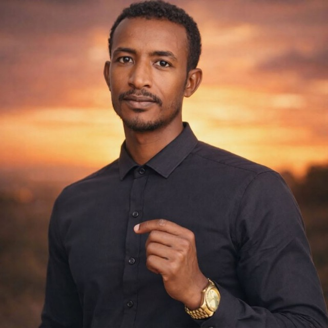

Doctor of Veterinary Medicine (DVM)
Wollo University.
An Ethiopian professional whose work brings together veterinary medicine, management, entrepreneurship, research, media, and the preservation of cultural heritage.

Welcome. This website presents the academic journey, professional experience, publications, creative initiatives, and cultural interests of Iyasu Angani Dereja.
Iyasu Angani Dereja is an Ethiopian multidisciplinary professional, academic, entrepreneur, researcher, author, creative personality, public communicator, and religious servant originally from Gurague, Ethiopia. His interests and experience span veterinary and agricultural regulation, business management, project management, media development, creative industries, cultural documentation, and service to society.
His academic background includes veterinary medicine, management, and project management. Alongside his professional career, he has pursued entrepreneurial initiatives and research relating to veterinary science and Gurage traditional knowledge. His cultural interests include documenting Gurague naming traditions and contributing to the preservation of Ethiopian heritage.
Wollo University.
Principals College of Health & Business. Graduated with the distinction described as “Very Great Distinction.”
Alpha University College.
Saint Trinity University, Addis Ababa — studies reported as ongoing in the biography prepared in 2026. Please update this status before publication if it has changed.
Ethiopian Agricultural Authority — current role as described in the supplied biography. Confirm wording and current status before publishing.
HaMedia Ethiopia — a media initiative active across digital platforms.
Zore Designers — creative services including graphic design, video production, and consultation.
Biological Analyst at the Ethiopian Agricultural Authority; General Manager at Halos Childcare S.C.; and Training & Capacity Building Director at Enat Party.
Add publication links, journal names, dates, ISBNs, and publisher details where available. Clearly distinguish completed publications from works in progress.
Add verified links to the original articles, interviews, recordings, and media profiles so visitors can consult the source material.
Iyasu has described long-standing service in the Ethiopian Orthodox Tewahedo Church as a deacon, together with interests in Ge’ez, Guragigna, and Amharic spiritual chant, preaching, liturgical traditions, and the composition of spiritual chants. His cultural interests also include the documentation of Gurague language, names, and traditional knowledge.
The original biography records service beginning in 1998 E.C. Please verify dates and wording before this page is made public.
Language proficiency descriptions should be reviewed and confirmed before publication.
For professional, research, media, and collaboration inquiries, please get in touch by email or through the official media channels below.
Email: iyasuangani@gmail.com